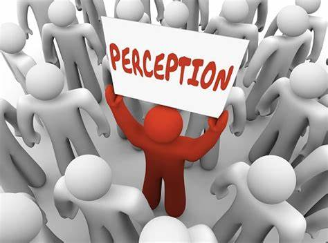

Making a name on different social media platforms is a good marketing technique for
your business. You can get a lot of valuable information that you can use for the improvement of your
business or brand. Here are the benefits of having a brand on Social Media.
You can monitor general opinion about your product.
Increase brand awareness with the use of social media platforms. In the online
world, you can read the reviews and have basic assumptions on what your audience thinks about
your business or brand. Make improvements and changes in your ways of creating content and
marketing styles from the opinions you will see and read regardless of whether it's positive or negative.
Your business can get more attention if you work smart.
In the world of digital marketing, being creative alone is not enough. You also
need to be smart in terms of posting advertisements, creating relevant and unique content, and
reaching your target market. You need to plan everything on how to execute your marketing
strategies and to come up with unique content that will catch more attention from your audience.
You can create a good perception from your customers.
Aside from promoting your business to increase your sales, you also need feedback
from your customers. Positive and negative feedback will help you improve your marketing techniques
and social interaction with your customers. Feedback also contributes to how you build your presence
in the world of digital marketing. Every feedback or comment from your customers will be seen by your
potential customers. This feedbacks might result in a positive and take effect your business. You
have to be approachable and understandable to avoid negative feedback from your customers.

You can easily develop a target market.
Conducting research regarding your target market will give you useful information like
where to find them and the times they are most active in a certain social media platform. It will be
beneficial to your business to know and understand your target market so you can easily reach them and
promote your business.
You can keep your customers updated and engaged.
With the social media accounts of your business, you can easily interact with your customers.
You can create an online community or consistently give updates about your business or brand. Making a
habit of updating your customers and communicating with them will keep them more engaged and loyal to your brand.
You can enjoy unlimited opportunities.
Nowadays, social media platforms have added different features that will benefit business
entrepreneurs. There are a lot of tools you can use to increase your sales, increase brand awareness, and
reach a wider audience. You simply promote your business with a post or tweet that can be seen and shared
by a lot of people if you have gathered their attention. It is quite hard to build a reputation in the online
world because of security and privacy issues, and you also have a lot of competitors. Being smart enough and
creative, you can think of ways on how to outstand your competitors. Smart enough to know and understand your
target audience for you to come up with advertisements that will easily catch their attention. Creative in a
way that you maximize all the tools you have and be able to create content relevant to your target audience.